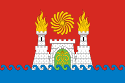
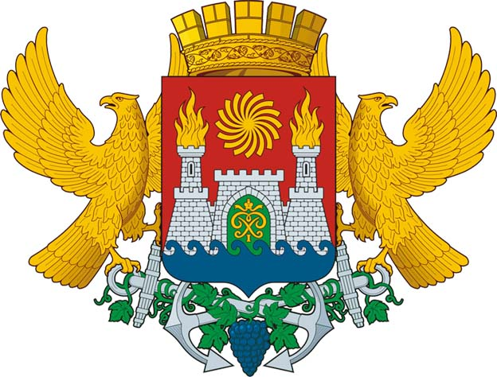

В декабре 2006 года Махачкала обрела свои официальные символы — герб и флаг города. Решением Городского собрания депутатов № 272 от 15 декабря 2006 г . утверждено Положение о гербе и флаге городского округа «Город Махачкала».
Флаг Махачкалы
Флаг города Махачкалы представляет собой прямоугольное полотнище с соотношением сторон 2:3, на всю поверхность которого распространена композиция из гербового щита города Махачкалы с заменой золота на жёлтый цвет и серебра — на белый. Оборотная сторона флага является зеркальным отображением его лицевой стороны.
Герб Махачкалы
Красный (червлень) — символизирует храбрость, любовь, мужество, смелость, великодушие, а также кровь, пролитую за веру, отечество. Синий (лазурь) — символизирует красоту, величие, верность, доверие, безупречность, а также развитие, движение вперед, надежду и мечту. Желтый (золото) — символизирует справедливость, милосердие, великодушие и смирение, а также богатство, знатность, самостоятельность. Белый (серебро) — символизирует веру, чистоту, искренность, чистосердечие, благородство. Зеленый (зелень) — символизирует изобилие, плодородие, надежду, радость, свободу, здоровье, покой и мир.
